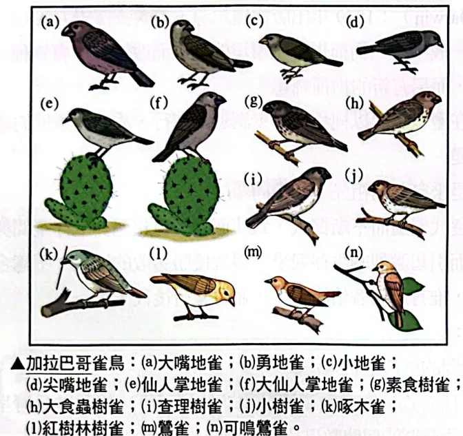
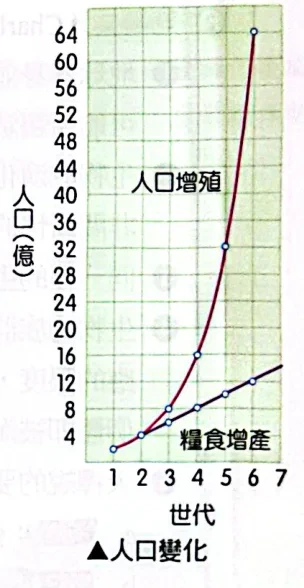
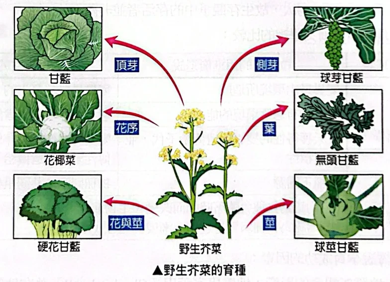
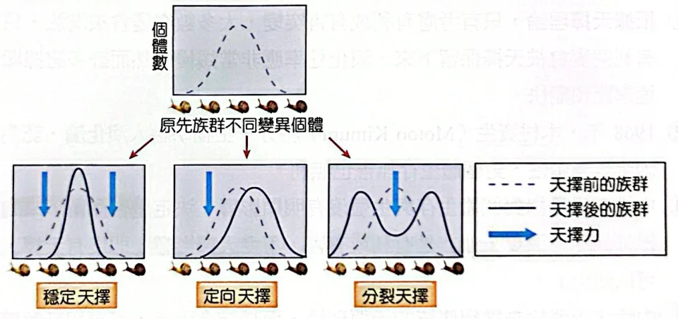
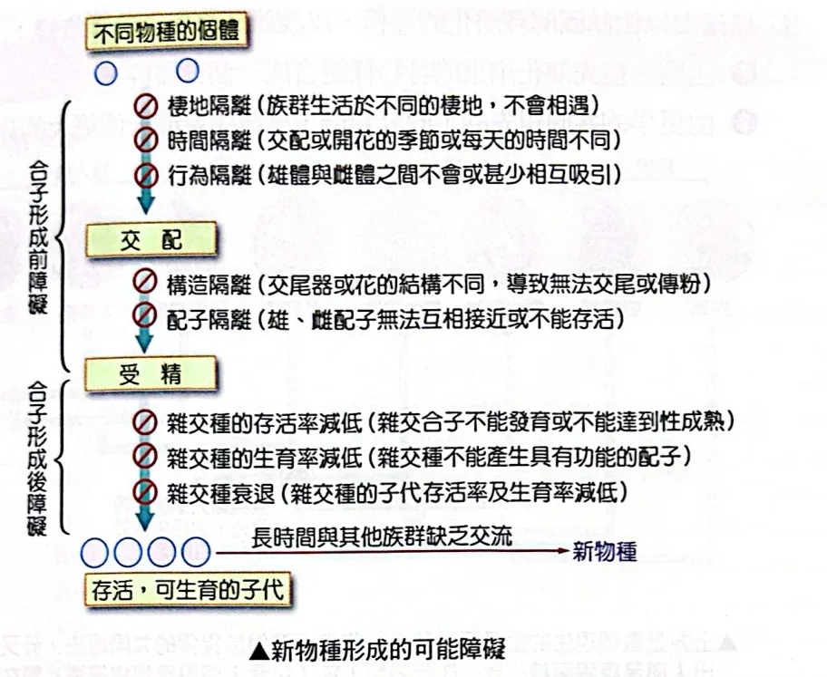
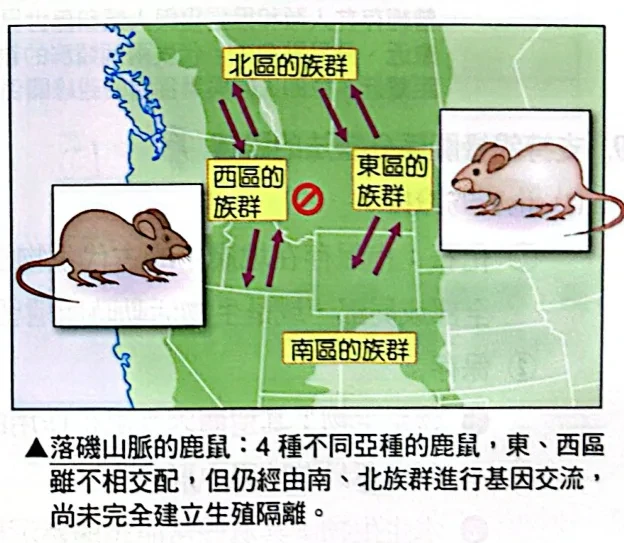
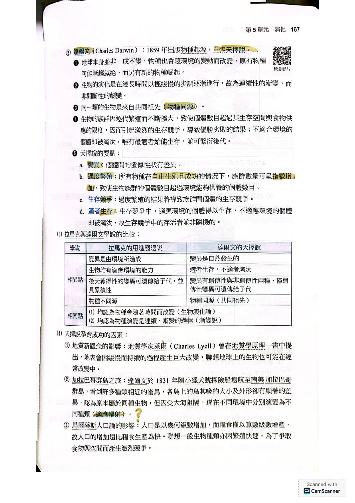
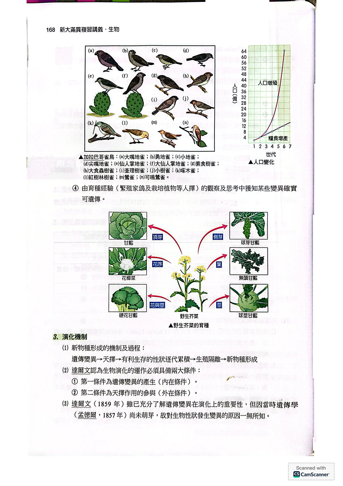
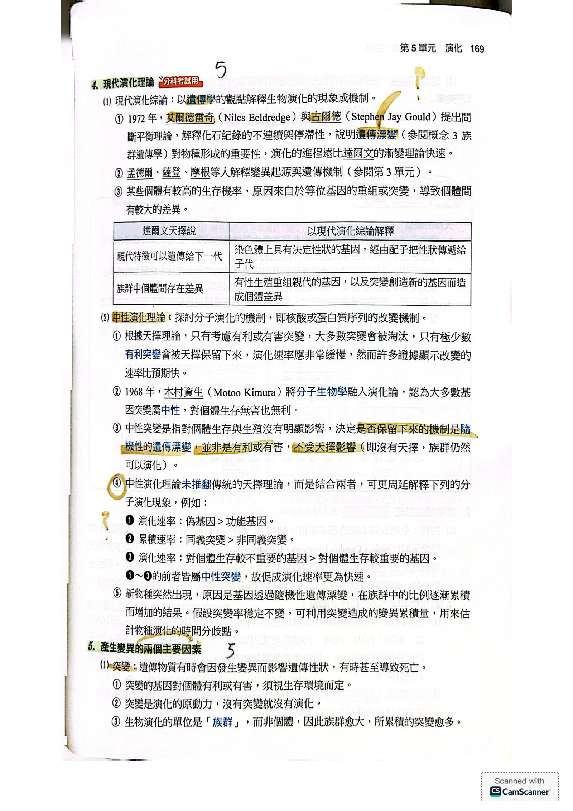
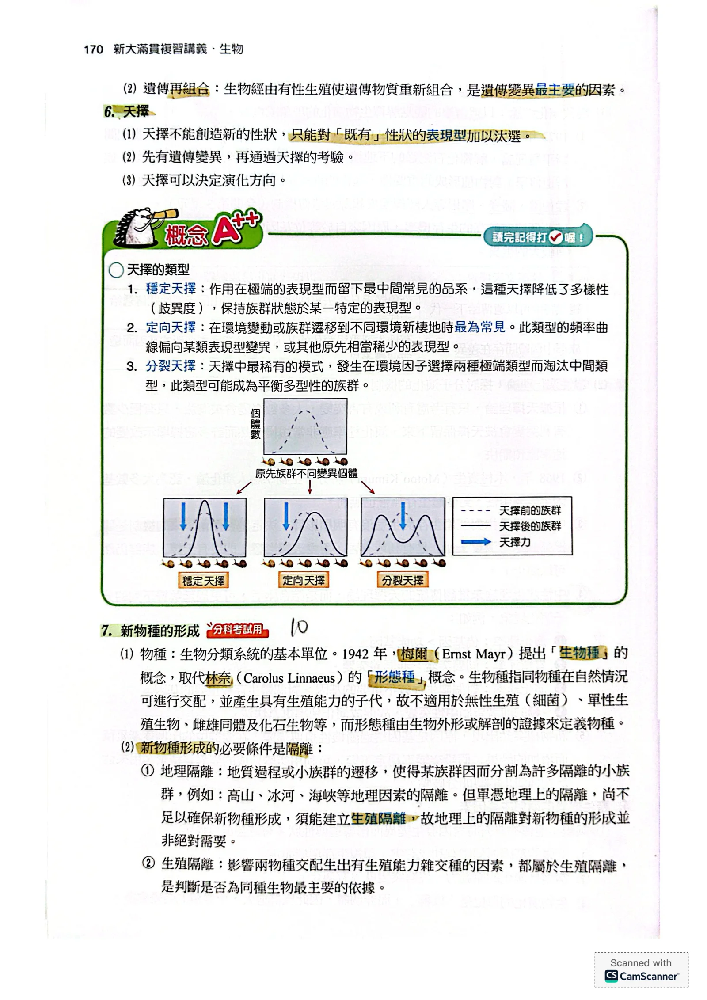

第5單元 演化
5-2演化觀念與機制
觀念篇・本範圍無題目
演化與拉馬克的想法
- 這節要問：生物為什麼會隨時間改變？
- 生物演化：少數構造簡單的原始生物，經過長期、緩慢的演變，繁衍出多種構造複雜的生物。地球上的生命估計已有 30 多億年歷史。
- 探討生物如何演化的學說或原理，稱為演化生物學。
- 早期演化思想難獲普遍響應，因為推想過於主觀、理論欠周且缺乏實證。
- 近代演化思想從十九世紀初期發展至今。拉馬克（Jean-Baptiste de Lamarck）提出用進廢退說。
- 拉馬克認為常用的器官逐漸發達，不用的器官逐漸退化，因為生物會適應環境。
- 他認為後天獲得的變化可遺傳給後代，稱後天獲得性遺傳。
- 他認為用進廢退代代重複，器官的形態與功能因而改變。
- 他認為各類生物始祖各自自然發生，再沿獨立路線演化，所以物種不同源。
- 後天獲得性遺傳不能成立：例如長頸鹿因採食而拉長的頸部，不會因此改變生殖細胞的 DNA，所以不能把這種後天性狀遺傳給後代。
- 魏斯曼（August Weismann）將老鼠尾巴逐代剪短，連續至第 21 代，後代尾巴並未變短或消失。
- 此實驗說明體細胞的獲得性變異不能因此遺傳給後代，因為剪尾巴不會改變生殖細胞的遺傳物質。
達爾文的天擇說
- 這節要問：個體之間的差異如何影響族群的演化？
- 達爾文（Charles Darwin）於 1859 年出版《物種起源》，主張天擇說。
- 地球並非一成不變；物種也隨環境變動而改變。原有物種可能逐漸滅絕，也可能有新物種崛起。
- 達爾文認為演化在漫長時間中極緩慢地逐漸進行，所以是連續的漸變，而不是間斷的劇變。
- 同一類生物來自共同祖先，稱為物種同源。
天擇說的形成：觀察與啟發
- 這節要問：哪些觀察促使達爾文提出天擇說？
- 地質學家萊爾（Charles Lyell）在《地質學原理》提出：緩慢而持續的過程可使地表產生巨大改變。這啟發生物也可能持續改變。
- 1831 年，達爾文搭乘小獵犬號遠航至南美加拉巴哥群島。
- 他看到相近雀鳥的喙大小與外形在各島顯著不同；他認為祖先原屬同種，受大海阻隔後，在不同環境分別演變，稱適應輻射。

- 馬爾薩斯人口論指出人口以幾何級數增加，糧食以算數級數增加，所以人口增加快於糧食生產。
- 這啟發達爾文想到生物繁殖迅速，因食物和空間有限而產生競爭。

- 繁殖家鴿、栽培植物等人擇經驗，讓達爾文知道某些變異確實可以遺傳。
- 野生芥菜經人選擇不同部位，可培育出不同作物，因為這些差異可傳給後代。

演化機制與現代演化綜論
- 這節要問：變異如何與天擇共同影響新物種的形成？
- 遺傳變異是可以傳給後代的差異；生殖隔離是族群間無法產生可生育後代的障礙。
- 新物種形成的過程可整理為：遺傳變異 → 天擇 → 有利生存的性狀逐代累積 → 生殖隔離 → 新物種形成。
- 達爾文認為演化有兩個條件：內在的遺傳變異，以及外在的天擇作用。
- 達爾文了解遺傳變異的重要性，卻不知道性狀變異的原因，因為當時遺傳學尚未萌芽；孟德爾的研究始於 1857 年。
- 現代演化綜論以遺傳學觀點解釋演化的現象與機制。
- 孟德爾、薩登、摩根等人解釋變異來源與遺傳機制。
- 個體生存機率可有差異，因為等位基因的重組或突變會造成個體差異。
- 1972 年，艾爾德雷奇（Niles Eeldredge）與古爾德（Stephen Jay Gould）提出間斷平衡理論，解釋化石紀錄的不連續與停滯。
- 間斷平衡理論說明遺傳漂變對物種形成的重要性，並認為演化進程遠比達爾文漸變理論快。遺傳漂變是族群中基因比例的隨機變化。
中性演化理論
- 這節要問：對生存沒有明顯影響的變化，也能在演化中累積嗎？
- 分子演化是核酸或蛋白質序列的改變。
- 若只考慮有利或有害突變，預期演化很慢：因為多數突變被淘汰，只有極少數有利突變被天擇保留。
- 許多證據卻顯示分子改變的速率比此預期快。
- 1968 年，木村資生（Motoo Kimura）提出中性演化理論：多數基因突變是中性的，對生存無害也無利。
- 中性突變對個體生存與生殖沒有明顯影響；它是否保留主要由隨機的遺傳漂變決定。
- 沒有天擇時族群仍可能演化，因為中性變異的比例可隨機改變。
- 中性演化理論未推翻天擇理論；兩者結合可更周延解釋分子演化。
- 偽基因是失去功能的基因；非同義突變會改變所編碼的胺基酸。
- 基因變異可經隨機遺傳漂變，在族群中逐漸累積；新物種因此可能突然出現。
- 若假設突變率穩定，可用變異累積量估計物種演化的時間分歧點。
變異的來源與天擇類型
- 這節要問：性狀差異從哪裡來？天擇如何改變差異的分布？
- 突變是遺傳物質的變化，可能影響遺傳性狀，甚至導致死亡。
- 突變有利或有害取決於生存環境，因為同一性狀在不同環境的效果可能不同。
- 突變是演化的原動力，因為它產生新的遺傳變異；沒有突變就沒有演化。
- 演化的單位是族群而非個體；族群愈大，所累積的突變愈多。
- 遺傳再組合是有性生殖使遺傳物質重新組合，是遺傳變異最主要的因素。
- 天擇不能創造新性狀，因為它只能對既有性狀的表現型加以汰選。
- 先有遺傳變異，再經天擇考驗；天擇可決定演化方向。

物種與生殖隔離
- 這節要問：如何判斷新物種已形成？
- 物種是生物分類系統的基本單位。
- 1942 年，梅爾（Ernst Mayr）提出生物種概念，取代林奈（Carolus Linnaeus）的形態種概念。
- 生物種指同種個體在自然情況下能交配，並產生具有生殖能力的子代。
- 生物種概念不適用於無性生殖的細菌、單性生殖生物、雌雄同體及化石生物，因為難以用此交配條件判定。
- 形態種依生物外形或解剖證據定義物種。
- 新物種形成的必要條件是隔離，包括地理隔離與生殖隔離。
- 地理隔離可能由高山、冰河、海峽等阻隔，或地質過程及小族群遷移造成，使族群分成隔離的小族群。
- 單有地理隔離不足以確保新物種形成，因為還須建立生殖隔離；地理隔離並非絕對必要。
- 生殖隔離是影響兩物種交配產生可生育雜交種的因素，也是判斷是否同種的主要依據。
- 合子是受精後形成的細胞。生殖隔離可發生在合子形成之前或之後。

異域種化與同域種化
- 這節要問：地理隔離有無參與，新物種如何形成？
- 種化作用是演化中新物種的形成或起源。
- 異域種化：地理隔離使新物種在不同地點形成。
- 例子有美國大峽谷北岸的白尾羚鼠與南岸的哈氏羚鼠，以及臺灣的山椒魚。
- 落磯山脈鹿鼠是進行中的物種形成：東、西區不相交配，但仍經由南、北族群交流基因，因此尚未完全建立生殖隔離。

- 同域種化：沒有地理隔離，新物種在同一地理區由同一親代或不同親代形成。
- 突變種與母族群的遺傳差異若造成生殖障礙，種化可在單一世代發生。
- 植物多倍體的種化例子包括市售馬鈴薯、傅氏鳳尾蕨、小麥、棉花與蘋果。
- 其他例子有非洲維多利亞湖的慈鯛科魚類及榕果小蜂。
本篇整理
- 這節要把演化思想、變異、天擇與種化的關係接起來。
下一篇接著看演化的證據，以及演化觀念如何影響生物分類。
核對原講義全頁（生物2 PDF56–61）
對應印刷166–171頁：PDF56由概念2開始，至PDF61的種化作用為止；PDF61下方演化概念對生物分類系統的影響留待下一篇。本範圍沒有經典演練題目。




